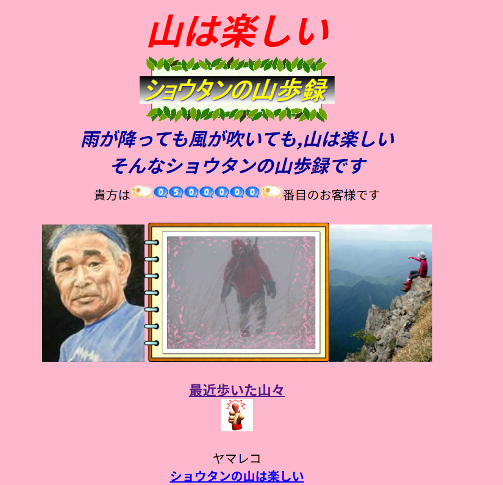
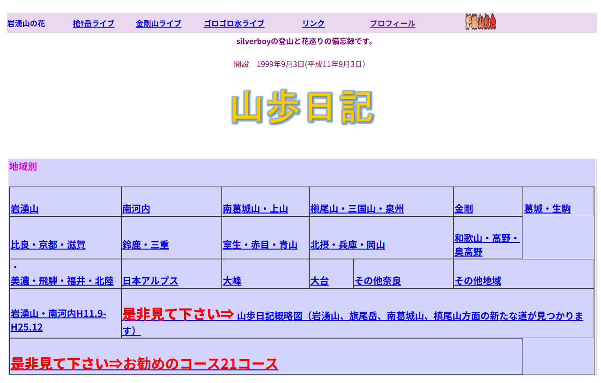

その他
山行記録や日記とは別に、参考にしている情報や、 主な活動フィールド、地図や道具に関する整理・考察などをまとめるページです。
参考リンク
日頃の山行計画や振り返りで参考にしているサイトや、 お世話になっている方々のページへのリンク集です。
山行記録・計画
-
ヤマレコ
山行記録の管理、ルート確認、最近は地図確認でも欠かせないサービス。
山仲間・個人サイト
-

ショウタンの山は楽しい
いろんな山域をいろんな山行スタイルで踏破されています。特におすすめはバリルートです！。
-

山歩記
飽きっぽい私が今まで山歩きを続けて来られたのはSilverBoyさんのこのページのおかげです。岩湧山を中心に沢山の山を多く歩かれているます。また花のページも専門家顔負けの内容です。詳細な記事が参考になります。
岩湧山
主な活動フィールドである岩湧山についての記録、気づき、考察などをまとめる予定。
地図・読図
地形図の読み方、ルート判断、GPSの使い方などについての整理メモ。
山道具
使用している装備や、実際に使って分かったことなどの記録。